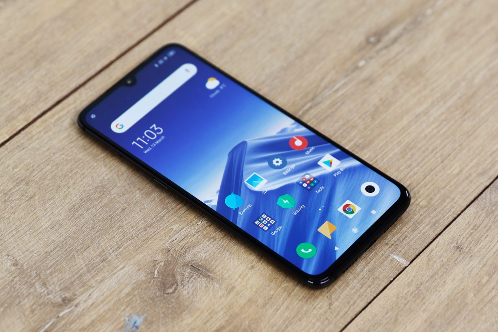
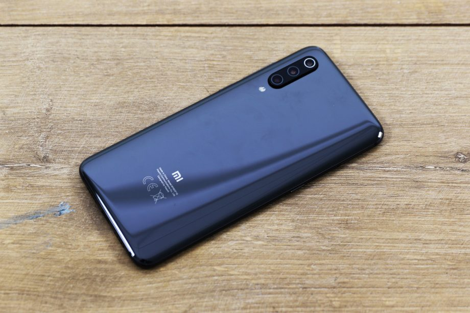

|
 |
Xiaomi’s tagline might as well be “more bang for your buck”, because its new top-dog brings a killer triple camera arrangement and Qualcomm’s latest and greatest Snapdragon 855 processor to the party, making for a compelling combination – and all for around half the price of your typical flagship phone.
|  |  |
| Front View | Back View |
|---|
Xiaomi has subtly tweaked the form factor of last year’s Mi 8, granting the Mi 9 what it calls an “all curve” back. The rear of the Mi 8 sported rounded edges but a flat back. The curve of the Mi 9’s Gorilla Glass 5 rear is continuous on all four sides, meaning it sits more comfortably in the palm. With a thickness ranging from 7.6mm down to 3.5mm at its thinnest point, the Mi 9 feels deceptively slender for a device that’s around the same size and dimensions as the hefty iPhone XS Max.
The flat 6.39-inch 19.5:9 AMOLED display is vibrant without veering towards over-saturation, plus it comes with a very respectable 1080 x 2340 resolution and pleasingly svelte bezels all the way around. Set beneath the Gorilla Glass 6 protecting the phone’s AMOLED display is a supposedly improved in-display fingerprint sensor, which Xiaomi says unlocks up to 25% faster than the optical sensor first introduced on the Mi 8 Pro.
Xiaomi’s MIUI interface is a heavy-handed skin set atop Android, but the global version of MIUI 10 as it appears on the Android 9.0 Pie experience running on the Mi 9 feels decidedly approachable – even for newcomers to the operating system.You can choose between classic three-button navigation or a gesture-driven experience for interaction. I prefer the former, as I like to leverage the available one-handed mode from time to time, and there’s an easy gesture shortcut to activate the feature if you stick with buttons.
There have been no corners cut with the Xiaomi Mi 9’s engine – it’s one of the first phones to be powered by Qualcomm’s Snapdragon 855 SoC (system on chip).As the benchmark scores show, that Snapdragon 855 and the phone’s 6GB of RAM also render the Mi 9 one of the most powerful devices on the market. This shouldn’t come as too much of a surprise – most of the current rivals are still relying on last year’s hardware – but even newcomers such as the Galaxy S10 series have to put up a fight to fend off this affordable alternative.
The Xiaomi Mi 9’s most interesting (and, on paper, impressive) feature has to be its camera – or, cameras. This is the company’s first triple-lens setup and it doesn’t mess around.The headliner is its 48-megapixel primary sensor, which features a pleasingly wide f/1.75 aperture. It’s the same sizeable Sony IMX586 1/2-inch sensor found on the Honor View 20.
| Processor | Qualcomm Snapdragon 855 mobile chip |
|---|---|
| Screen | 6.39-inch AMOLED screen |
| Battery | 4000mAh |
| Software | MIUI10; Android PIE |
| Camera |
|
The price, performance and camera offered up by the Mi 9 should have purveyors of more costly rivals such as Apple, Huawei and Samsung worried.
| Pros | Cons |
|---|---|
|
|